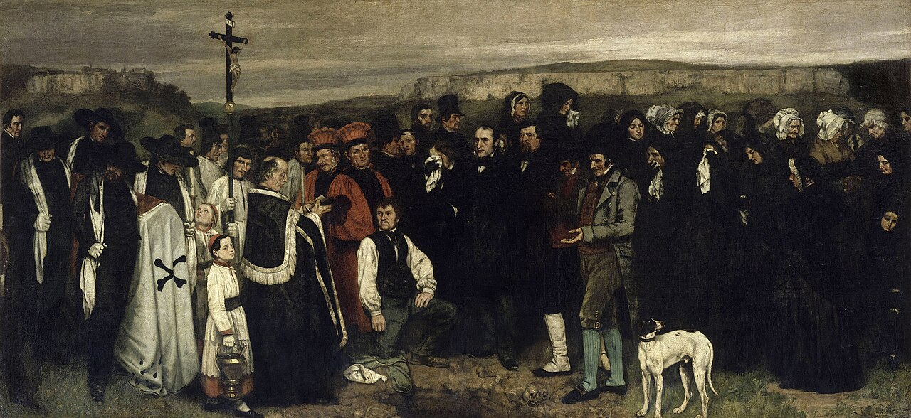
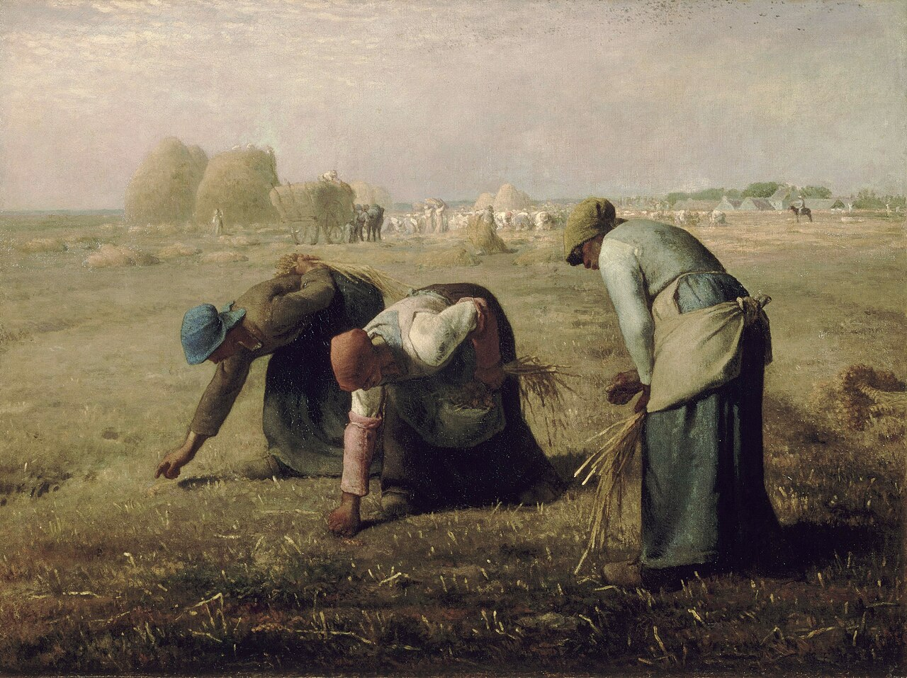
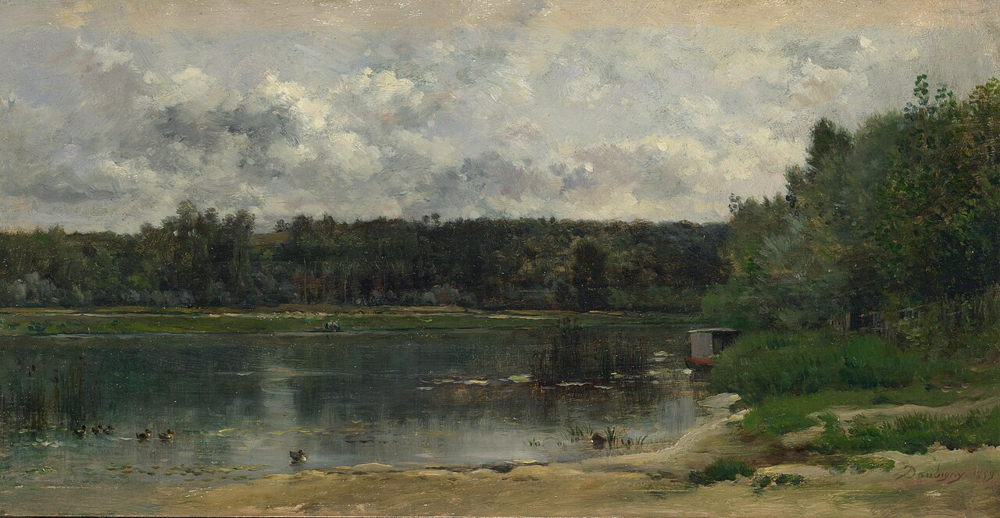
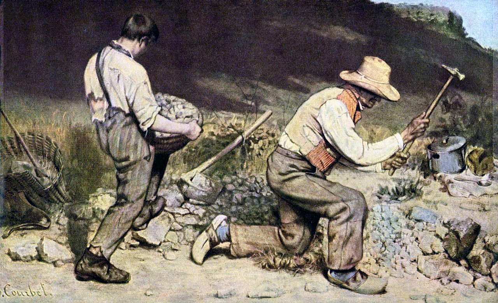
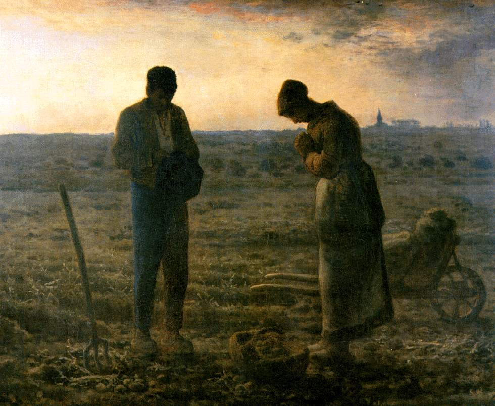
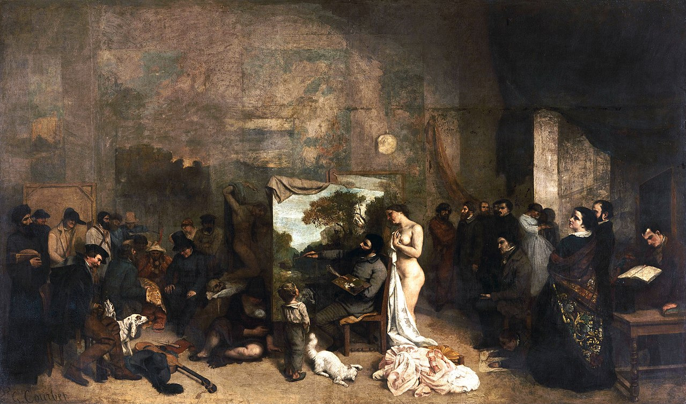
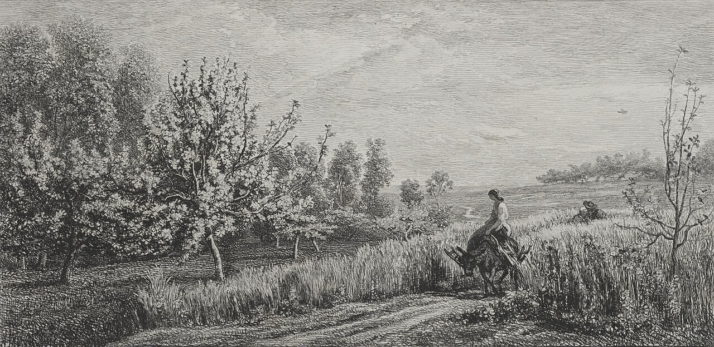
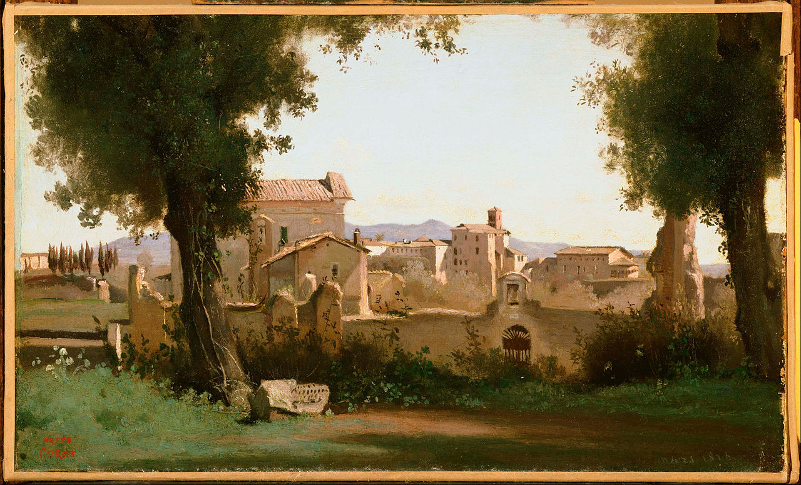
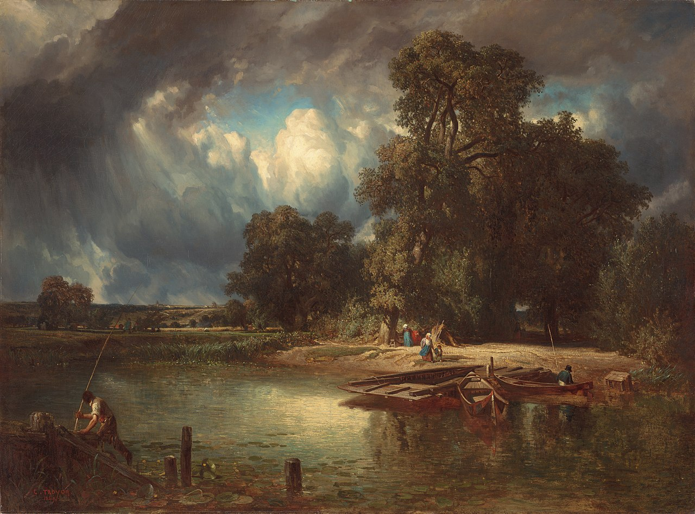
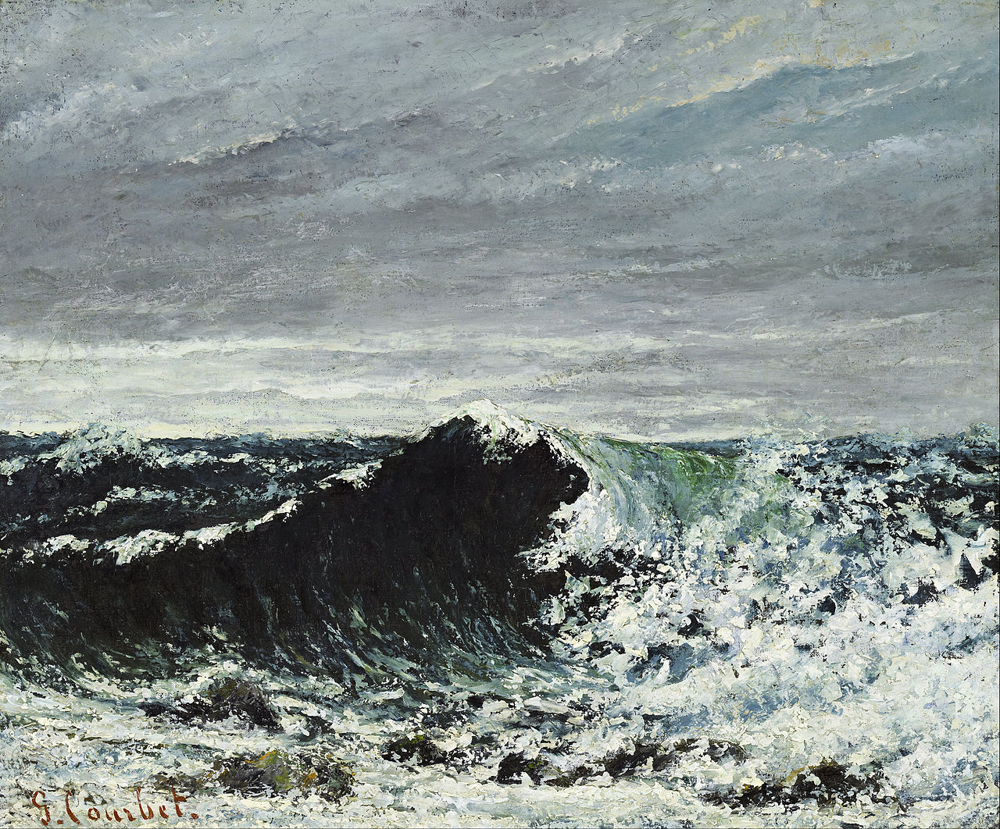

Meesterwerk: Een Begrafenis in Ornans
Gustave Courbet, 1850

⚜️ UITGEBREIDE STIJLFIGUREN
👁️ WAARHEID ZONDER IDEALISATIE
De werkelijke wereld: Geen mythologie, geen heroïsche geschiedenis, geen exotisme. Gewone mensen, gewone dingen, gewone dagen.
Geen verfraaiing: De boer heeft vieze handen, de arbeider is moe, de straat is vuil. Schoonheid zit in de waarheid.
🎨 SOBER PALET & PRECIEZE PENSEEL
Aardse kleuren: Bruin, grijs, groen, oker. Geen felle Romantische kleuren. De kleur van de werkelijkheid is ingetogen.
Precisie: Scherpe contouren, gedetailleerde texturen. Je kunt de stof voelen, de steen aanraken.
🏘️ SOCIALE KLASSEN
De arbeider als held: Niet de generaal, niet de koning, maar de boer, de mijnwerker, de steenhouwer. De arbeider als onderwerp van kunst.
Kritiek: Realisme laat de maatschappelijke ongelijkheid zien. Het is vaak impliciet sociaal-kritisch.
📸 OBJECTIVITEIT
De kunstenaar als observator: Geen oordeel, geen emotie, alleen registratie. Bijna wetenschappelijk.
Voorloper van fotografie: Realisten wilden "zoals het is" vastleggen. Fotografie zou dit ideaal vervullen.
📚 TIJDSGEEST CONTEXT (1848-1900)
🌍 POLITIEK PERSPECTIEF
De periode 1840-1870 vormde een keerpunt in de Europese politieke geschiedenis, gekenmerkt door revolutionaire opwellingen, de opkomst van de arbeidersklasse, en de geboorte van moderne ideologieën. De Revolutions van 1848 — bekend als de "Lente der Volkeren" — verspreidden zich vanuit Frankrijk over meer dan vijftig Europese landen en betekenden de meest wijdverspreide revolutionaire golf in de Europese geschiedenis. Arbeiders en hervormers eisten democratische rechten, persvrijheid en economische gerechtigheid. Hoewel de meeste opstanden werden onderdrukt, leidden zij tot blijvende hervormingen, waaronder de afschaffing van het feodalisme in Oostenrijk en Hongarije.
De Tweede Industriële Revolutie transformeerde de Europese samenleving fundamenteel. Fabriekssteden explodeerden: Manchester, Lille en het Ruhrgebied werden symbolen van zowel vooruitgang als uitbuiting. De urbanisatie bracht miljoenen plattelandsbewoners naar steden, waar zij werkten onder erbarmelijke omstandigheden — 14-urige werkdagen, kinderarbeid en gevaarlijke omstandigheden. Deze sociale ontwrichting vormde de directe aanleiding voor het Realisme: kunstenaars zoals Courbet en Millet documenteerden het leven van deze nieuwe arbeidersklasse met ongekende eerlijkheid.
In Frankrijk vestigde Napoleon III in 1852 het Tweede Keizerrijk na een staatsgreep. Zijn modernisatie van Parijs onder baron Haussmann — brede boulevards die barricades onmogelijk maakten — creëerde de moderne stad maar verdrong de armen naar de periferie. De Commune van Parijs (1871) vormde het bloedige hoogtepunt van de arbeidersstrijd. Na de Franse nederlaag in de Frans-Duitse Oorlog greep de Parijse arbeidersklasse de macht. Gedurende twee maanden experimenteerde de Commune met socialistisch beleid: scheiding van kerk en staat, afschaffing van kinderarbeid, en werknemerszelfbestuur. De bruut neergeslagen opstand — met 10.000 tot 20.000 doden tijdens de "Bloedige Week" — inspireerde Karl Marx tot zijn analyse van de "dictatuur van het proletariaat". Courbet werd gevangengezet voor zijn rol bij de vernietiging van de Vendôme Colom.
De socialistische beweging kreeg vorm. Het Communistisch Manifest (1848) van Marx en Engels verscheen, en in 1864 werd de Eerste Internationale opgericht. Pierre-Joseph Proudhon's anarchistische ideeën beïnvloedden Courbet direct. Vakbonden ontstonden, stakingen werden georganiseerd, en de arbeidersklasse ontwikkelde een politiek bewustzijn. In Amerika leidde de Amerikaanse Burgeroorlog (1861-1865) tot de afschaffing van de slavernij, terwijl de unificatie van Italië (1861) en Duitsland (1871) nieuwe natiestaten creëerde. Het kolonialisme bereikte nieuwe hoogten, waarbij Europese machten Afrika en Azië domineerden — vaak afgebeeld door realistische schilders als exposé van zowel exotisme als uitbuiting.
Het Realisme was inherent politiek: door de werkelijkheid onverbloemd af te beelden — de vermoeide steenhouwer, de gebogen arenleester, de derde klas treinwagon — maakten kunstenaars onzichtbaar lijden zichtbaar en eisten zij waardigheid voor allen.
📖 LITERAIR PERSPECTIEF
- Naturalisme (Zola, "Germinal" 1885) toont de harde werkelijkheid
- Flaubert's "Madame Bovary" (1857) wordt vervolgd voor "immoraliteit"
- Tolstoj's "Oorlog en Vrede" (1869) combineert realisme met epiek
- De "new journalism" ontstaat
- Ibsen's sociale drama's
- Literatuur wordt een wapen tegen onrecht
🧠 PSYCHOLOGISCH PERSPECTIEF
- De mens als product van omstandigheden (milieu, erfelijkheid)
- Zola's "naturalisme" past wetenschappelijke methoden toe op karakter
- Darwin's evolutie (1859) toont de mens als dier
- Determinisme vs
- De massa-psychologie wordt onderzocht (Le Bon, 1895)
- Het individu verdwijnt in de moderne stad
⚙️ HISTORISCH PERSPECTIEF
- De Tweede Industriële Revolutie: staal, elektriciteit, chemie
- De Eiffeltoren (1889) symboliseert het machine-tijdperk
- Fotografie (Daguerre 1839) en later cinematografie (Lumière 1895) veranderen visuele cultuur
- Spoorwegen verbinden continenten
- Steden ontploffen (urbanisatie)
- Hygiëne en volksgezondheid worden belangrijk
🎭 FILOSOFISCH PERSPECTIEF
- Positivisme (Comte): alleen empirische feiten tellen
- Materialisme (Marx): economische structuren bepalen cultuur
- Darwins evolutietheorie demystificeert de mens
- Nihilisme (Dostojevski's "De Demoon") dreigt
- Wetenschap verdringt religie als autoriteit
- Objectiviteit als ideaal - kunstenaar als neutrale waarnemer
🎨 MEESTERWERKEN - GEDETAILLEERDE ANALYSE
1. "Een Begrafenis in Ornans" (1850) — Gustave Courbet
Musée d'Orsay, Parijs · 315 × 668 cm · Olieverf op doek
Achtergrond: Een werkelijke begrafenis in Courbet's geboortedorp Ornans. De mensen zijn echte dorpsbewoners, geen acteurs. Courbet's manifest van het Realisme - groot van formaat, groot van ambitie.
🔍 STIJLANALYSE
Grootte: Dit is het formaat van een historisch schilderij - maar het onderwerp is een gewone dorpsbegrafenis. Courbet eert het gewone door het groot te schilderen.
Figuren: Geen heroïsche poses. Mensen staan, zitten, kijken. Sommigen zijn verveeld, sommigen verdrietig. Het is authentiek, niet gespeeld.
Kleur: Donker, grijs, bruin. De kleuren van de aarde, van de rouw. Geen felle accenten - het leven is sober.
Politiek: Courbet toont dat het gewone volk waardig is om geschilderd te worden. Dit is democratisering van de kunst.
2. "De Arenleesters" (1857) — Jean-François Millet
Musée d'Orsay, Parijs · 84 × 111 cm · Olieverf op doek

Achtergrond: Drie vrouwen rapen achtergebleven aren op na de oogst. Een oud recht van armen. Millet geeft hen waardigheid - geen bedelaars, maar arbeiders.
🔍 STIJLANALYSE
Houding: De vrouwen zijn gebogen, maar niet gebroken. Het is zwaar werk, maar ze doen het met trots. De monumentaliteit van hun lichamen suggereert kracht.
Compositie: De vrouwen vormen een eenheid in de voorgrond. Achter hen: de overvloed van de oogst, de paarden, de rijken. De kloof tussen arm en rijk is visueel.
Kleur: Gouden aren, blauwe jurken, aarde. Warm en koel in evenwicht. Het is armoede, maar niet ellende - er is schoonheid in hun arbeid.
Symboliek: De drie vrouwen (jeugd, volwassenheid, ouderdom) als een levenscyclus van arbeid. Millet erkent de waarde van hun werk.
3. "De Rivier" (1868) — Charles-François Daubigny
National Gallery, Londen · 38 × 66 cm · Olieverf op paneel

Achtergrond: Een rivierlandschap, geschilderd en plein air (buiten). Daubigny was een voorloper van het Impressionisme. Dit is Realisme als directe waarneming van de natuur.
🔍 STIJLANALYSE
Losse penseel: De bladeren zijn snelle vlekken, het water is horizontale strepen. Dit is niet gedetailleerd Realisme maar suggestief - de indruk van een moment.
Licht: Het licht filtert door de bomen. Schaduwen zijn blauw, licht is warm. Daubigny observeert hoe licht werkelijk werkt.
Compositie: De rivier leidt het oog naar de horizon. De bomen vormen een natuurlijk kader. Het is een "gewoon" landschap - geen verheven Alpen, geen storm, gewoon een rustige dag.
Invloed: Monet bewonderde Daubigny. Dit werk toont de overgang van Realisme naar Impressionisme.
4. "De Steenbrekers" (1849) — Gustave Courbet
Vernietigd in WOII · 165 × 257 cm · Olieverf op doek

Achtergrond: Twee arbeiders breken stenen voor de wegenbouw. Een oude man en een jongen - generaties van armoede. Het origineel werd vernietigd tijdens WOII, maar foto's en kopieën overleefden.
🔍 STIJLANALYSE
Gezichten: Courbet schilderde de gezichten niet duidelijk. Dit zijn geen individuen maar types - de oude arbeider, de jonge arbeider. Het lot van een klasse, niet van personen.
Lichaamstaal: De oude man buigt, de jongen draagt. Zwaar werk, dag na dag. De houdingen zijn natuurlijk - Courbet observeerde echte steenbrekers.
Kleur: Aarde, stof, grauw. Geen kleur om de werkelijkheid te verfraaien. Het leven van deze mensen is grijs.
Politiek: Courbet schilderde dit voor de Revolutie van 1848. Het is een aanklacht tegen de uitbuiting van de arbeidersklasse. Kunst als sociaal protest.
5. "De Angelus" (1857-1859) — Jean-François Millet
Musée d'Orsay, Parijs · 55 × 66 cm · Olieverf op doek

Achtergrond: Een boerenpaar staat stil voor het avondgebed (de Angelus). Het werd een van de meest geliefde schilderijen van de 19e eeuw. Het toont de spiritualiteit van het gewone volk.
🔍 STIJLANALYSE
Devotie: De eenvoudige boeren buigen hun hoofd. Geen kerk, geen priester - alleen hun geloof. Millet toont dat heiligheid niet afhankelijk is van status.
Compositie: De figuren vormen een pyramide - stabiel, eeuwig. De manden, de kruiwagen, de gereedschappen liggen stil. Het werk wacht op het gebed.
Licht: De schemering valt. De toren op de achtergrond (vaak uitgelegd als een kerk) belt. Warm, zacht licht omhult het paar.
Symboliek: De aarde (manden), de hemel (toren), de mensen ertussen. Het is een triniteit van arbeid, geloof en liefde. Salvador Dalí zag er seksuele symbolen in.
6. "Het Atelier van de Schilder" (1855) — Gustave Courbet
Musée d'Orsay, Parijs · 361 × 598 cm · Olieverf op doek

Achtergrond: Courbet's manifest in olieverf. Links: de maatschappij (armen, rijken, priesters). Rechts: de vrienden van Courbet (kunstenaars, schrijvers). Midden: Courbet zelf, schilderend. Het heet "Allegorie van het Realisme".
🔍 STIJLANALYSE
Triptych: Drie werelden in één schilderij. Links: het gewone volk. Rechts: de intellectuelen. Midden: de kunstenaar als brug. Courbet plaatst zichzelf centraal - niet arrogant, maar als waarneemder.
De naakte: Het model dat Courbet schildert is niet Venus maar een gewone vrouw. Het naakt wordt ontmythologiseerd - het is lichaam, niet goddelijkheid.
De jongen: De kleine jongen die naar Courbet kijkt (midden-links) is pure onschuld. Hij kijkt naar de kunstenaar als nieuwe profeet.
Grootte: Dit is het formaat van een historisch of religieus schilderij. Courbet eert het Realisme als de nieuwe religie.
7. "Lente" (1862) — Charles-François Daubigny
Musée d'Orsay, Parijs · 61 × 116 cm · Olieverf op doek

Achtergrond: Een weide in het voorjaar, geschilderd in Auvers-sur-Oise. Daubigny schilderde vaak in zijn boot op de rivier. Het toont zijn liefde voor de natuur en het plattelandsleven.
🔍 STIJLANALYSE
En plein air: Dit is buiten geschilderd, niet in een atelier. Je ziet het natuurlijke licht, de frisse lucht. De penseelstreken zijn snel, direct, als een impressie.
Kleur: Groen in alle tinten - het nieuwe gras, de bladeren, de weerspiegeling. Geel en wit van de bloemen. Het is lente als explosie van leven.
Compositie: De boom links vormt een kader. De rivier leidt het oog naar de horizon. Het is een uitnodiging om naar binnen te lopen.
Invloed: Van Gogh bewonderde Daubigny. De heldere kleuren, de dikke verf, de liefde voor het platteland - het is een brug naar het Post-Impressionisme.
8. "Gezicht op Rome" (1826) — Jean-Baptiste-Camille Corot
Louvre, Parijs · 64 × 101 cm · Olieverf op doek

Achtergrond: Corot schilderde dit tijdens zijn verblijf in Rome als pensionnaire van de Académie de France. Het toont Rome als een levende stad, niet alleen als ruïnes.
🔍 STIJLANALYSE
Historische lagen: Oude tempels, middeleeuwse torens, barokke kerken. Rome is geschiedenis opgeschicht. Maar het is ook een moderne stad met mensen en dieren.
Licht: Het zuidelijke zonlicht is helder, warm. Schaduwen zijn zacht, atmosferisch. Corot's "zilveren toon" is al zichtbaar.
Compositie: De horizon ligt hoog. De lucht neemt meer dan de helft in. Dit is bijna een luchtschilderij - de atmosfeer is het onderwerp.
Realisme: Geen ideale, klassieke Rome maar de echte stad met haar onvolkomenheden. Corot schildert wat hij ziet, niet wat hij verwacht.
9. "De Naderende Storm" (19e eeuw) — Constant Troyon
Musée d'Orsay, Parijs · 100 × 150 cm · Olieverf op doek

Achtergrond: Een kudde koeien in een weide, terwijl donkere wolken naderen. Troyon was gespecialiseerd in dieren, vooral koeien. Het toont de Romantiek invloed op het Realisme - het dramatische in het alledaagse.
🔍 STIJLANALYSE
Contrast: Het warme licht op de koeien versus de donkere, dreigende lucht. De rust van de dieren versus de naderende storm. Spanning in stilstand.
Dieren: Troyon schilderde koeien als monumenten. Hun lijven zijn massief, hun huid glanst. Het zijn geen melkfabrieken maar wezens met karakter.
Landschap: De Hollandse invloed is zichtbaar (Cuyp, Potter). Maar de dreigende lucht is Frans. Het is realisme met een romantische ondertoon.
Techniek: De penseelstreken in de wolken zijn snel, krachtig. De koeien zijn gedetailleerd. Contrast tussen hemel en aarde.
10. "De Golf" (1870) — Gustave Courbet
Musée d'Orsay, Parijs · 90 × 66 cm · Olieverf op doek

Achtergrond: Een machtige golf breekt aan de kust van Normandië. Courbet schilderde meerdere " golven" in zijn late periode. Het is Realisme dat het sublime omarmt.
🔍 STIJLANALYSE
De golf: Het water is geen decor maar het onderwerp. De kracht, het gewicht, de transparantie - Courbet observeerde urenlang golven. Het is bijna abstract.
Kleur: Groen, wit, blauw - de kleuren van zee en schuim. De golf is wit als marmer. Het is een sculptuur van water.
Penseelwerk: Dikke verf, paletmes, snelle streken. Je voelt de beweging. Courbet's late stijl is vrijer, expressiever - bijna Impressionistisch.
Symboliek: De golf als leven en dood. De natuur die de mens overspoelt. Maar ook pure schoonheid - Realisme kan lyrisch zijn.
📚 CONCLUSIE: DE WERKELIJKHEID TRIOMPHEERT
Het Realisme leert ons:
- Dat het gewone waardig is: Een boer verdient net zoveel aandacht als een koning
- Dat waarheid schoonheid is: Geen verfraaiing nodig - de werkelijkheid spreekt voor zich
- Dat kunst politiek kan zijn: Tonen is al oordelen
- Dat observatie kunst is: Kijken, registreren, begrijpen
- Dat de toekomst in het gewone zit: De arbeider als held van de moderne tijd
Realisme zegt: "Dit is hoe het is. Kijk."